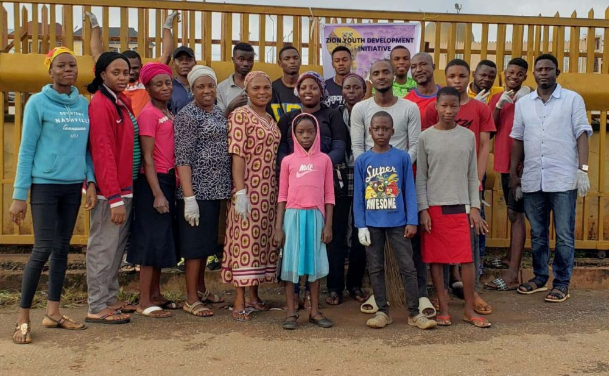

President – Olakunle Obademi
Oversees vision, strategy, and overall leadership.

Vice President
Assists the President and coordinates departmental activities.

Secretary General
Handles official records, meeting minutes, and correspondence.

Treasurer
Manages funds, budgets, and financial accountability.

Director of Programs & Projects
Designs and implements youth empowerment projects.

Director of Training & Capacity Building
Oversees workshops, mentorships, and skills training programs.

Director of Community Outreach & Partnerships
Builds relationships with partners, sponsors, and communities.

Director of Communications & Public Relations
Manages social media, press releases, and branding.

Monitoring & Evaluation Officer
Tracks project impact, performance, and reporting.
Volunteer & Membership Coordinator
Recruits, trains, and supports volunteers and members.